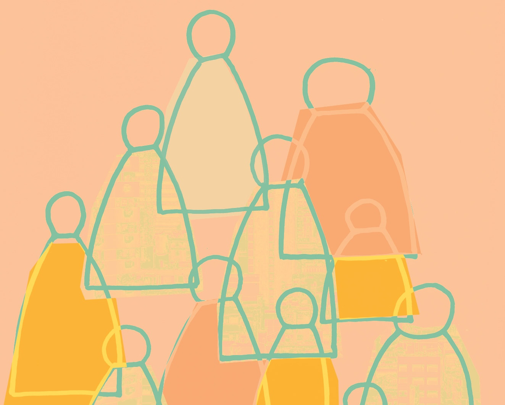

Juan Manuel Sarochar Risso. Doctorando en Educación por la Universidad Autónoma de Barcelona (UAB); Magíster en Política y Gestión de la Educación (CLAEH); Diplomado en Pedagogía para la Formación de Jóvenes y Adultos (CREFAL, México);
Profesor de Geografía (Consejo de Formación en Educación).
Resumen
La participación ciudadana viene siendo, por lo menos desde hace una década, la dimensión de la formación para la ciudadanía más connotada; así lo evidencian autores como Gros y Contreras (2006), Cox (2006), Touriñán (2007), Corbo et al. (2008),
Aiello de Almeida (2010), entre otros.
En este artículo presentamos los principales avances de resultados de una investigación (realizada en el marco del Programa de Doctorado en Educación de la Universidad Autónoma de Barcelona) cuyos objetivos son, entre otros, los siguientes:
realizar un análisis comparado y cualitativo entre el ámbito de la Educación Secundaria Obligatoria (ESO) en Cataluña y del Ciclo Básico en Uruguay en lo que respecta a la concepción y abordaje de la dimensión de la participación ciudadana;
identificar y analizar las principales convergencias y divergencias existentes entre ambos ámbitos educativos en lo que respecta a la concepción y abordaje de la dimensión de la participación ciudadana.
Palabras clave: formación para la ciudadanía; participación ciudadana; Educación Secundaria Obligatoria; Ciclo Básico.
Title: Citizen participation in Compulsory Secondary Education (ESO, Catalonia) and the Basic Cycle (Uruguay). Research advancement.
Abstract
Citizens› participation has been, for at least a decade, the most connoted form of citizenship, as evidenced by authors such as Gros and Contreras (2006), Cox (2006), Touriñán (2007), Corbo et al. (2008), Aiello de Almeida (2010), among others.
In this paper we present the main results of research (within the framework of the Doctoral Program in Education of the Autonomous University of Barcelona) whose objectives are, among others, the following:
to carry out a comparative and qualitative analysis between the scope of Compulsory Secondary Education (known by its Spanish acronym, ESO) in Catalonia and the Basic Cycle in Uruguay, regarding the conception and approach of the dimension of
citizen participation;
identify and analyze the main convergences and divergences existing between both educational areas in terms of the conception and approach of the dimension of citizen participation.
Keywords: training for citizenship; citizen participation; Compulsory Secondary Education; Basic Cycle.
Metodología
Expresamos antes que esta investigación es planteada desde la aplicación de una metodología comparada y cualitativa. Acerca de lo primero cabe considerar lo que Ruiz (2011: 85) expresa sobre la importancia que posee la investigación comparada en
el ámbito educativo:
[…] la centralidad que tiene la comparación en la investigación educativa se debe a la importancia que adquiere la comparación dentro del proceso de investigación científica. […] autores como Murray Thomas, Stewart Fraser y William Brickman otorgan una importancia suprema a la comparación en la investigación educativa al sostener que ella permite el análisis de los sistemas educativos, de sus cuestiones problemáticas o bien la indagación sobre dos o más entidades referidas a la educación en diferentes contextos (nacionales, culturales, institucionales).
Para la obtención de información aplicamos los siguientes procesos: a) análisis de los textos curriculares correspondientes a todas las asignaturas de la Educación Secundaria Obligatoria de Cataluña (Decreto 143/2007) y del Ciclo Básico de Uruguay
(Reformulación 2006); b) entrevistas a informantes calificados en Cataluña y en Uruguay (realizamos un total de dieciséis entrevistas, ocho en cada territorio). Según Batthyány y Cabrera (2011: 90), un tipo particular de entrevista es la que se
realiza a los llamados informantes calificados:
Estas personas cumplen un rol fundamental en una investigación como conocedores […] del tema que se pretende investigar. Se encuentran en un lugar privilegiado y poseen información que puede ser de utilidad para contextualizar el fenómeno a estudiar y nos pueden acercar al ámbito en el que se producen los hechos.
Tanto para el caso de Cataluña como para el de Uruguay, la selección de los informantes calificados se realizó mediante la confluencia de la orientación brindada por expertos en el campo educativo y de la identificación por nuestra parte de informantes
que consideramos idóneos para obtener de ellos información relevante acerca de nuestro tema-objeto de investigación.
Resultados del análisis de los textos curriculares
En el caso catalán, realizado el análisis de los textos curriculares, identificamos que en estos aparece de manera recurrente la idea de que la Educación Secundaria Obligatoria debe fomentar en el alumnado el ejercicio de prácticas o acciones sociales (en las dimensiones ecológica, tecnológica, de derechos humanos, cultural, de salud, entre otras) que contribuyan a la mejora general de la convivencia social.
En el caso catalán, realizado el análisis de los textos curriculares, identificamos que en estos aparece de manera recurrente la idea de que la Educación Secundaria Obligatoria debe fomentar en el alumnado el ejercicio de prácticas o acciones sociales
(en las dimensiones ecológica, tecnológica, de derechos humanos, cultural, de salud, entre otras) que contribuyan a la mejora general de la convivencia social. En este sentido, la expresión participación ciudadana aparece explicitada,
como veremos a continuación, en reiteradas ocasiones haciendo referencia a la intervención de los ciudadanos en los asuntos públicos (es decir, respecto al bien común) para contribuir de forma cooperativa al progreso de la comunidad.
Otro aspecto que caracteriza y define la concepción de participación ciudadana contenida en los textos curriculares analizados es que las prácticas o acciones sociales que, dijimos antes, deben ser fomentadas en el alumnado con el fin de
que estos contribuyan a la mejora de la convivencia social, son consideradas respecto a todas las escalas espaciales de las que forma parte cada individuo, esto es, la escala local, nacional, regional y global.
En el currículo de la asignatura Ciencias sociales, geografía e historia se explicita que la formación para la ciudadanía es imprescindible para que el alumnado logre, en el futuro: intervenir en la vida laboral, social y política;
tomar decisiones en relación a la defensa del patrimonio cultural y natural y el uso sostenible del medio; defender la justicia social, la solidaridad y la equidad; participar en el diseño de alternativas a problemas cotidianos, sociales y políticos;
trabajar para la cohesión social; valorar la importancia de la participación ciudadana en el funcionamiento de las instituciones públicas y, en general, en las democracias actuales.
Por otra parte, en las pautas curriculares del Ámbito de lenguas (que incluye las asignaturas Lengua catalana y literatura, Lengua castellana y literatura y Lenguas extranjeras) aparece destacada la importancia de fomentar en los jóvenes
las competencias comunicativas y lingüísticas necesarias para que ellos logren participar en las distintas dinámicas de su entorno tanto a nivel individual como colectivo. Esto implica, según se expresa, que los alumnos asuman un rol activo en
la construcción de una ciudadanía comprendida en el contexto de un mundo plural, multilingüe y multicultural.
En el currículo de la asignatura Ciencias de la naturaleza se enfatiza el propósito de poner al alcance del alumnado aquellos conocimientos que les sean útiles para tomar decisiones respecto de los problemas más relevantes del mundo, especialmente
los relacionados con la gestión sostenible del ambiente y la salud propia y comunitaria. En tal sentido, uno de los objetivos de esta asignatura expresa:
Analizar y valorar la importancia de utilizar los conocimientos científicos y las interacciones de la ciencia y la tecnología para participar en la toma de decisiones sobre los principales problemas locales y globales con que se enfrenta la sociedad en vistas de asegurar un futuro más sostenible.
En el ámbito curricular de Educación para el desarrollo personal y la ciudadanía se destaca, en primer lugar, que uno de los objetivos que deberá comprender toda la etapa de la Educación Secundaria Obligatoria es aprender a ser ciudadanos en un mundo global, lo cual necesariamente implica, se expresa, la promoción de una actitud participativa y abierta a la participación de los demás, adquiriendo el compromiso individual y colectivo de construir un mundo más justo y
equitativo. Esto sin perder de vista la importancia de la participación ciudadana en las otras escalas territoriales que hacen a la escala global: Tener conciencia de la pertenencia a los diferentes ámbitos de ciudadanía propios (local, autonómico, estatal, europeo y global), y de la necesidad de contribuir a su desarrollo y a su mejora.
En el ámbito de Educación para el desarrollo personal y la ciudadanía hallamos, además, diferentes expresiones que refieren directamente al fomento de la participación ciudadana del alumnado, participación entendida en
un sentido amplio, que trasciende la dimensión estrictamente cívica: “combatir el incumplimiento y la violación de los derechos humanos”, “rechazar comportamientos y actitudes discriminatorios”, “rechazar situaciones de marginación, intolerancia, desigualdad e injusticia social”, “procurar un desarrollo humano sostenible y asumir estrategias de consumo racional y responsable”, “manifestar actitudes favorables a la solidaridad y cooperación internacionales”, “asumir responsabilidades personales a través de la participación individual y colectiva”.
Cabe resaltar, además, que incluso en currículos tradicionalmente percibidos como distantes o apartados del ámbito propio de las Ciencias sociales se reconoce y valoriza el fomento de la participación del alumnado en los diferentes ámbitos
de su vida; en este sentido, el currículo de la asignatura Matemáticas expresa como uno de sus objetivos:
Valorar las matemáticas como parte de la cultura, tanto desde el punto de vista de la historia como desde la diversidad cultural del mundo actual, y utilizar la competenciamatemática para analizar todo tipo de fenómenos de nuestro mundo y para actuar de manera reflexiva y crítica en los diferentes ámbitos de la vida.
Pasando ahora al caso uruguayo, hecho el análisis de los textos curriculares correspondientes al Ciclo Básico de Educación Secundaria(Reformulación 2006), identificamos que la noción de participación ciudadana está presente en los currículos
de varias asignaturas pero, a diferencia de lo que ocurre en el caso catalán, de forma menos explícita.
En general, aparece subrayada la importancia de la formación del alumno en lo que refiere al desarrollo de una postura participativa a nivel comunitario, de modo tal que él aprenda a desenvolverse como un agente activo en el proceso de mejora de
las condiciones sociales de su comunidad. Sin embargo, al realizar un examen más minucioso del contenido de los textos curriculares encontramos que, en contraste con lo visto en el caso catalán, el énfasis puesto en la cuestión de la participación ciudadana aparece aquí de manera menos definida, especialmente −y paradójicamente− en el currículo de la asignatura Educación Social y Cívica.
En este marco, nos sorprendió descubrir que el currículo de la asignatura Biología es el que posee más expresiones que remiten a la noción de participación ciudadana. Uno de los ejes que conforman el perfil de egreso para esta asignatura al finalizar Ciclo Básico expresa:
Participación social a partir del desarrollo de actividades personales de cooperación, perseverancia y responsabilidad, y del reconocimiento de la actividad científica como posible fuente de satisfacción y realización personal.
En este mismo sentido se expone además que
[…] la educación científica contribuirá a facilitar a los jóvenes la comprensión del mundo en que viven, los modos en que se construye el conocimiento científico, las interacciones entre Ciencia, Tecnología y Sociedad. Se considera un medio especialmente idóneo para democratizar el uso social de la ciencia, lo que implica desarrollar la capacidad de elegir, decidir, actuar responsablemente.
En lo específico del currículo del primer año de Biología se exponen como logros de aprendizaje, entre otros, los que siguen: Propone acciones para preservar los ámbitos y períodos, relacionadas con la reproducción de las distintas especies y Valora
al ser humano como responsable del mantenimiento de la homeostasis de los ecosistemas y propone acciones referentes a su preservación. Por su parte, el currículo de segundo año de Biología expresa en su fundamentación:
Se presentan asimismo, ciertas problemáticas vinculadas con la salud y el ambiente que permitirán poner a los alumnos en contacto con situaciones sanitarias del contexto y aplicar los contenidos estudiados para su comprensión. A través del análisis de estas situaciones, se pretende que los alumnos tomen conciencia de la importancia de detectar los factores de riesgo y asumir un rol protagónico al participar en actividades de promoción de salud.
Mientras que en la fundamentación del currículo de tercer año de Biología se expone:
En este curso, que constituye el año terminal del ciclo, los alumnos tendrán oportunidad de profundizar y aplicar los conocimientos adquiridos en los años anteriores para proponer, valorar y participar en iniciativas encaminadas al desarrollo sostenible y para tomar decisiones que les permitan avanzar hacia el logro real de conductas más saludables, participando a su vez activamente en instancias de promoción de salud individual y colectiva. […] En este curso, el docente tiene la oportunidad de generar espacios para que los alumnos aprendan a analizar las situaciones o problemas relacionados con la Salud, interpretarlos a la luz de información adecuada y reflexionar sobre los valores que llevan implícitos las acciones. Este trabajo les permitirá tomar decisiones en forma responsable para mejorar su calidad de vida y la de las personas que los rodean.
Apuntando en este mismo sentido, uno de los objetivos de enseñanza del currículo del tercer año expresa: Propiciar modalidades de participación social con relación a temáticas que ponen en evidencia las complejas relaciones entre Salud, Tecnología y Sociedad.
Por su parte, el currículo de la asignatura Geografía presenta como uno de los ejes transversales para los tres cursos de Ciclo Básico: La búsqueda de una mirada constructiva y de una participación responsable de los alumnos en el análisis de los temas y en el accionar colaborativo junto a sus pares en la comunidad educativa y social; mientras que uno de los saberes actitudinales a priorizar en los tres cursos apunta al desarrollo de Seres responsables en su accionar democrático en la sociedad. En éste mismo sentido se expone además que
Al finalizar el Ciclo Básico, sería deseable que el alumno haya adquirido algunos saberes espaciales integradores como ser humano y ciudadano de su país y el mundo que le permitan una adecuada percepción y comprensión del mismo. Como docentes y adultos nos compete colaborar con esta construcción del futuro, y la preocupación central es formar un individuo integral con sentido de pertenencia a la sociedad, libre y responsable, único e interdependiente, que valore la tradición y se implique en las innovaciones del mundo actual y futuro. Por lo tanto, entendemos fundamental trabajar en pos de que el alumno pueda desarrollar el saber ser, el saber hacer, el saber pensar y el saber convivir con sus pares, y los adultos en sociedad.
En la fundamentación del currículo del segundo año de Geografía se resalta el valor que posee la formación geográfica en el proceso de construcción de ciudadanía a través de las siguientes dimensiones:
La dimensión personal, que implica la conciencia de la contribución individual a la valoración y compromiso en la configuración del espacio geográfico. La dimensión social, que implica la capacidad y buena voluntad de trabajar con otros ciudadanos con distintas identidades culturales en diferentes escenarios para crear un territorio común. La dimensión espacial, que se refiere a la necesidad de los individuos de verse como miembros de múltiples y superpuestas culturas a escala local, regional y global.
Por su parte, el currículo de tercer año de Geografía expresa en su fundamentación: Uno de los principales desafíos de la enseñanza de la Geografía en 3er año, es lograr que el conocimiento geográfico sea un instrumento significativo para la transformación social.
En este mismo sentido, de los objetivos actitudinales propuestos para este curso destacamos los siguientes: Fortalecer una actitud comprometida con el desarrollo local, nacional y regional en un marco global. Y Estar dispuesto a pensar global y actuar localmente, para contribuir a la construcción de un mundo mejor.
En lo que respecta al currículo de la asignatura Historia es importante destacar el poco −casi nulo− énfasis que pone en lo que refiere al fomento de la participación ciudadana del alumnado. Solamente en el texto curricular correspondiente al tercer
año de Ciclo Básico aparecen dos referencias que aluden a la participación social del alumnado como sujeto activo, junto a otros, en pro de la mejora de las condiciones sociales de la comunidad:
Asimismo, se sugiere que el tratamiento de los temas del Programa contemple y considere, de manera articulada, la evolución histórica de los Derechos Humanos a nivel mundial y en nuestro país, que incluya la defensa de la dignidad humana, de los instrumentos legales para garantizarlos y la responsabilidad individual, social, grupal y política en su defensa, evitando toda forma de discriminación. La indagación sobre la vigencia y violación de los Derechos Humanos habilitará y brindará oportunidades a los/las estudiantes no sólo a participar activamente en su ejercicio y defensa como ciudadanos responsables y respetuosos del pluralismo cultural y de valores, sino a asumirse como sujetos de derechos.
[Es necesario reafirmar] el concepto de ‘aula fuera del aula’ como estrategia de intervención participativa y creativa, proponiendo que el/la estudiante se relacione con las principales manifestaciones culturales y/o artísticas de su entorno para comprenderlo significativamente y valorar el patrimonio local, así como involucrarse y responsabilizarse por su preservación.

Paradójicamente, el currículo de la asignatura Educación Social y Cívica también posee escasas referencias vinculadas a la cuestión de la participación ciudadana. En el marco de esta escasez, el llamado a la participación ciudadana en sentido
social aparece explicitado sin mucha diferenciación y/o profundidad explicativa respecto al llamado a la participación ciudadana en estricto sentido político.
Paradójicamente, el currículo de la asignatura Educación Social y Cívica también posee escasas referencias vinculadas a la cuestión de la participación ciudadana. En el marco de esta escasez, el llamado a la participación ciudadana
en sentido social aparece explicitado sin mucha diferenciación y/o profundidad explicativa respecto al llamado a la participación ciudadana en estricto sentido político. Así, en la fundamentación de este currículo se expresa que los contenidos
de la asignatura pretenden iniciar el proceso de
Información y reflexión, para la participación ciudadana consciente y responsable en los distintos ámbitos en que debe desempeñarse el adolescente.
Actividades prácticas que se relacionen con los aspectos teóricos desarrollados, donde el alumno se involucre en proyectos reales y realizables en el aula y en la institución educativa.
Comprensión del funcionamiento del gobierno a los efectos de concretar la efectiva futura participación ciudadana.
Por otra parte, si bien expresa que una ciudadanía democrática y participativa no se reduce únicamente a la elección de representantes para el gobierno, sino que también implica la participación de los individuos en distintas formas de organización
social que permitan poner en vigencia, real y efectiva, los principios del orden democrático, insistiéndose además en que la participación democrática requiere una ciudadanía activa y responsable y no meramente ser sujeto de derechos y obligaciones,
cuando se explicitan los contenidos de la Unidad III: Participación ciudadana, todo lo que se anota es:
Concepto y formas de participación: gremial (estudiantil); sindical; política.
Grupos de participación organizada: asociaciones gremiales y sindicales; asociaciones estudiantiles (formas de organización estudiantil, información y participación, el sufragio como mecánica en la toma de decisiones colectivas); otras formas de asociación; partidos políticos: organización, integración y requisitos.
Ciudadanía: Concepto y diferentes clases. Suspensión y pérdida. Derechos y obligaciones.
Resultados de las entrevistas
Todos los informantes calificados consultados coincidieron en que la formación para la participación ciudadana en el ámbito de los centros educativos de Ciclo Básico no se desarrolla apropiadamente por cuanto no promueve la construcción de una
auténtica conciencia ciudadana participativa.
En el caso catalán, tres fueron los aspectos en los que estuvieron focalizadas las expresiones brindadas por los informantes calificados consultados; estos señalaron que la Educación Secundaria Obligatoria:
procura el fomento de una noción integral y activa de participación ciudadana;
procura fomentar la transversalidad de la participación ciudadana tanto a nivel institucional como de aula;
enfatiza en la multiescalaridad territorial (de lo local a lo global) que debe fomentarse respecto a la cuestión de la participación ciudadana.
El primer aspecto señalado coincide, como puede observarse, con una de las características de la concepción de participación ciudadana que identificamos en los documentos curriculares analizados: esta es asumida como el involucramiento
del individuo en todas las esferas de la vida comunitaria y, por ello, no es interpretada únicamente como la participación del individuo en las dinámicas políticas y/o específicamente en las dinámicas político-partidarias del Estado democrático.
Con respecto a esta perspectiva de participación ciudadana destacamos lo que un directivo de centro educativo explicó:
En general, se trata de fomentar la participación del alumnado en todas las esferas que conforman al centro educativo; partimos de que es participación ayudar a decidir colectivamente; es participación realizar actividades de servicio en otras instituciones; es participación colaborar en el cuidado ambiental de todos los espacios del centro; es participación la intervención mediadora en las situaciones de conflicto… El propósito de todo esto es formar futuros ciudadanos responsables e involucrados en todos los ámbitos de la comunidad de pertenencia; creo que hoy no es posible pensar la formación para la ciudadanía de otro modo.
Asimismo, destacamos los aportes que en el mismo sentido brindó un docente entrevistado (profesor de Ciencias Sociales):
De acuerdo con las disposiciones normativas debemos buscar que la forma de integración del alumno al centro educativo, a la comunidad educativa, sea a través de la participación. Pero creo que los docentes lo hacemos no solo porque lo establecen las normas, tampoco por el simple hecho de animar cualquier tipo de participación, sino con la intención de forjar una participación socialmente responsable. Además, queda claro que entendemos la participación estudiantil en un sentido amplio, así como la participación ciudadana adulta es concebida desde múltiples aristas; debe darse en todos los espacios comunes de la institución como un proceso cotidiano, en las aulas, y fomentada desde todos los actores institucionales: dirección, profesorado, etc. El deber de los educadores es crear las condiciones para que esa participación sea efectiva, favorecer las condiciones necesarias para que suceda, que de hecho sucede; es decir, mirando la generalidad de los centros educativos, la participación del estudiantado es fomentada de manera adecuada; sin lugar a dudas siempre está el alumno o el grupo de alumnos al cual no le interesa participar o cuesta más que lo haga, pero creo que no es la situación que predomina.
Claramente vinculado con lo anterior, los informantes calificados consultados también coincidieron en que la participación ciudadana es fomentada desde el desarrollo de un accionar educativo transversal tanto a nivel institucional como a nivel de aula. En este sentido, un directivo de centro educativo expresó:
Este propósito educativo [el de formar para la participación ciudadana] no recae solamente sobre las asignaturas que, por los contenidos que desarrollan, más se vinculan a la cuestión de la participación ciudadana (Educación para la ciudadanía y los derechos humanos y Educación ético-cívica), sino que es una tarea asumida por los docentes de todas las asignaturas y en todos los espacios institucionales.
Por otra parte, los informantes calificados consultados coincidieron respecto a que, en general, la participación ciudadana fomentada en los centros de Educación Secundaria Obligatoria procura que el alumnado sea capaz de reconocerse y actuar como ciudadano que forma parte de comunidades humanas que comprenden diferentes escalas territoriales: la comunidad local, la nacional, la regional y la global. En este sentido, un docente entrevistado (profesor de Educación Ético Cívica) manifestó que:
[…] las responsabilidades individuales y grupales que hacen a la participación ciudadana son tratadas desde la perspectiva de que cada individuo es ciudadano de una comunidad local, nacional, regional y global, buscando concientizar que la participación ciudadana debe ser asumida de manera igualmente responsable en todas estas escalas. Como elemento clave para el fomento de este modo de concebir la participación ciudadana destaco la importancia de que el alumnado aprenda a reconocer los impactos que sus acciones individuales tienen sobre las demás personas y sobre sus entornos, tal como sucede en el caso ambiental, que quizá sea el más claro ejemplo actualmente.
Ahora bien, en el caso uruguayo la información obtenida por medio de las entrevistas realizadas contrasta con los que acabamos de ver en el caso catalán.
Todos los informantes calificados consultados coincidieron en que la formación para la participación ciudadana en el ámbito de los centros educativos de Ciclo Básico no se desarrolla apropiadamente por cuanto no promueve la construcción
de una auténtica conciencia ciudadana participativa. Como principal causa de ello fue señalada la desconexión existente entre el énfasis que algunos documentos oficiales (determinados currículos de asignaturas, principalmente) expresan
a favor de la formación para la participación ciudadana y las dinámicas cotidianas que realmente tiene lugar en los centros educativos. Asociado a esto, también hubo coincidencia entre los informantes respecto a que si bien los currículos
de algunas asignaturas exhortan a que los docentes realicen actividades en las que los alumnos participen de manera activa en los distintos ámbitos de la comunidad de pertenencia (por ejemplo, en el de la salud comunitaria o en el del cuidado
ambiental local) la mayoría de las veces, debido a la propia arquitectura que poseen los currículos (preeminencia de la dimensión teórica, criterios de evaluación focalizados principalmente en los contenidos de tipo conceptuales, inexistencia
de un eje transversal a todas las asignaturas que vehiculice la dimensión ciudadana y participativa −como sí ocurre en el caso catalán−), las acciones emprendidas en tal sentido no pasan de ser intentos aislados de fomentar una conciencia ciudadana
participativa.
Profundizando en lo anterior, uno de los informantes directivos consultados expresó:
[…] las diversas instancias de participación estudiantil pautadas por la normativa vigente (elección de delegados de clase y profesores consejeros, elección de los integrantes del Consejo Asesor Pedagógico y del Consejo de Participación) la mayoría de las veces quedan reducidas al cumplimiento de una mera forma ya que no hay un genuino convencimiento, ni por la parte estudiantil ni por la parte docente (en este último caso por falta de un interés intrínseco y/o de formación en tal sentido), de que dichas instancias sean realmente provechosas, es decir, de que realmente redunden en resultados tangibles, en logros observables.
Por esto, […] la participación comúnmente pierde sentido porque queda como una manera de cumplir con la reglamentación que la exige, concluyó el mismo informante.
También profundizando en su respuesta, otro informante (profesor de Educación Social y Cívica) sostuvo que el currículo de la asignatura Educación Social y Cívica está más orientado a la formación de la ciudadanía política que a la ciudadanía social:
[…] si analizamos este programa vemos que el objetivo es la participación sí pero en el sentido de las posibilidades que tienen los ciudadanos de cambiar las normas a través de los procesos que establece la Constitución; asimismo se insiste en los contenidos que tienen que ver con la organización política y en la forma de gobierno de Estado uruguayo, en los marcos teóricos de la organización del Estado, Poder Legislativo y su constitución, entonces me parece que el programa atiende más a la ciudadanía política que a la ciudadanía social; y sucede que la ciudadanía social es el conjunto de valores, de concepciones, de creencias que le da marco a la ciudadanía política, pero el problema central es que los mismos docentes no estamos preparados para asimilar ese marco de la ciudadanía social que tendríamos que tener en un Estado de Derecho para la formación de una ciudadanía participativa y democrática.
Por su parte, otro informante (directivo de centro educativo) expresó que una carencia muy perceptible en los centros de Ciclo Básico con respecto al incentivo de la participación activa del alumnado es que por más que los Proyectos de Centro incorporen
el tema de la participación como un eje transversal a la institución, sucede que en aulas los docentes trabajan sin atender dicho eje o, en todo caso, los vínculos existen pero son absolutamente forzosos, es decir, se incluye la participación
activa del alumnado en el aula pero como un elemento accidental u ocasional, atendida solo a modo de cumplimiento con lo requerido por el Proyecto de Centro.
Conclusiones generales
Del cruce de la información obtenida a partir del análisis de los textos curriculares y de las entrevistas realizadas, planteamos las siguientes conclusiones generales:
En el caso de la Educación Secundaria Obligatoria (Cataluña) la formación para la ciudadanía se desarrolla de forma más transversal (tanto a nivel institucional como de aula) que en el caso de Ciclo Básico (Uruguay); es más, en el caso
uruguayo podría decirse que dicha transversalidad es nula. De esto se deriva que el fomento de la participación ciudadana tendría, en el caso catalán, un carácter también transversal por cuanto es planteada para ser abordada desde distintas
asignaturas, incluso desde algunas que no pertenecen al ámbito específico de las Ciencias Sociales, y desde distintos ámbitos institucionales, tal como expresaron los informantes calificados consultados.
Por otra parte, en el caso catalán predomina, tanto en el discurso de los textos curriculares como en el de los informantes calificados, una noción de participación ciudadana que incluye distintas dimensiones, especialmente las siguientes: social,
política, cultural, económica, tecnológica y ecológica; en el caso uruguayo vemos que las principales dimensiones que incluye la noción de participación ciudadana son las más tradicionales, es decir, social y política, mientras que las
otras no aparecen o bien no están del todo explicitadas. Cabe una excepción en el caso de la dimensión ecológica, la cual aparece abordada en el currículo de Biología y Geografía, pero no así −paradójicamente− en el de Educación Social y Cívica.
Por último, destacar que otra importante divergencia identificada entre los dos casos comparados refiere a que en el ámbito curricular de la Educación Secundaria Obligatoria (Cataluña) la mención a las escalas local, nacional, regional y global
de participación ciudadana es recurrente, mientras que en el ámbito del Ciclo Básico también es así pero únicamente en los currículos de Biología y Geografía, por lo cual el fomento de la participación ciudadana desde
la escala local a la global se encuentra cualitativamente y cuantitativamente disminuido en el caso uruguayo en comparación con lo visto en el caso catalán.